The signs—Freeing words
Four 42 x 29,7 formats that constitute an A1
Printed in risography on recycled paper
Toulouse—November 2017
Freeing words from their duty of meaning. A work based on on the text « 100 façons de disparaître » from the news website Lundi Matin.
A text that expresses a form of rebellion against hyperconnectivity, and an urgent need to escape, back to a slowed temporality
and to an authenticity that would allow us to contemplate afresh. Words here, are treated as visual modules and materials, working with
and in the same way as an illustration or an image. They progressively become signs from which a quest for meaning is not necessarily
possible or even needed. Words are no longer brought together by a « signifying » relationship but only by a formal one. These considerations
force us to question the use of a typographic character and its readability and lead us to question the place of the translator, who transcribes
the text in shapes. Thereby becoming perhaps inadvertently the author of it because the form participates in the meaning
and in the reception of the text. This project is designed to draw the eye down the visual corridors and to question the limits
of the format but also simply to question the edited object, its construction and legitimacy.
To go further...
Paulo de Cantos — He apprehended the text as a visual module and material working with and in the same way
as an illustration or an image. The memory of a time where text had a visual and cognitive relationship remained deeply rooted
in his practice. The typographic tool was at the center of the construction of the image. He used lead characters and reflected
on what « the tool » implied for the form.
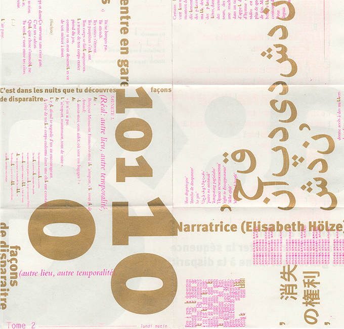
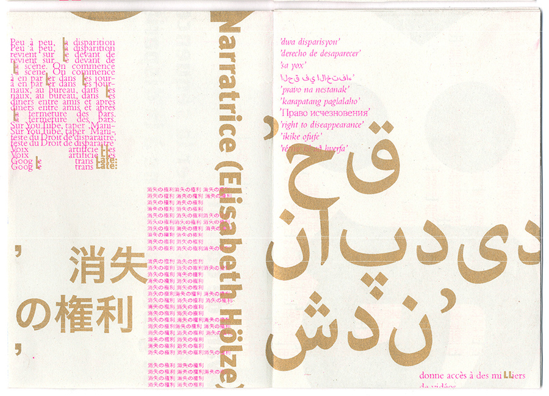
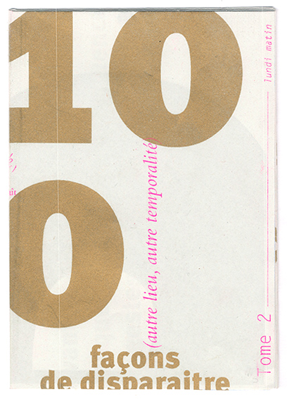
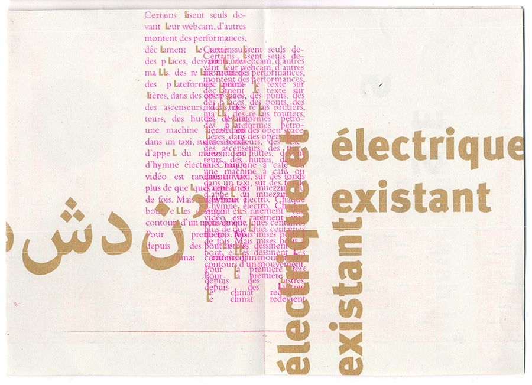
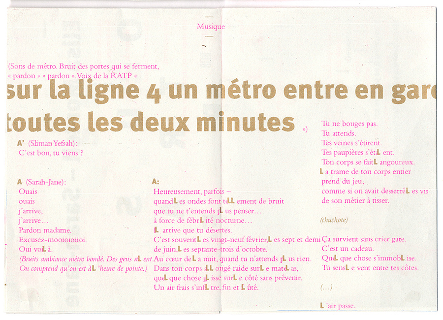
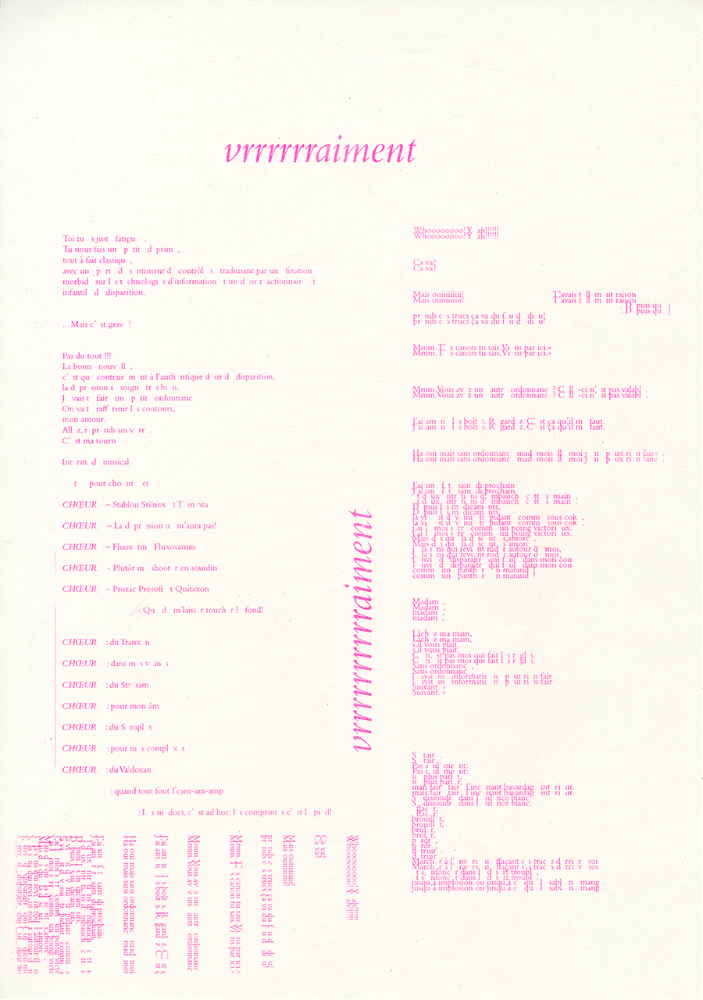
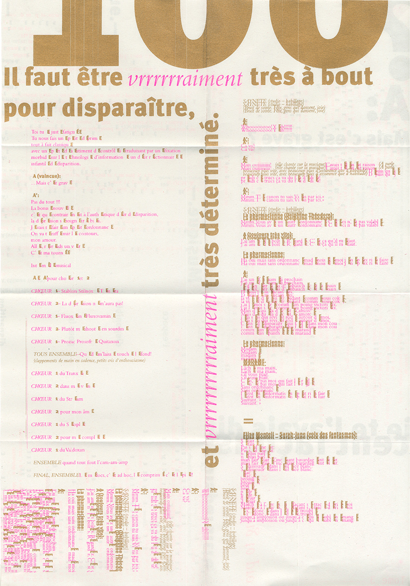
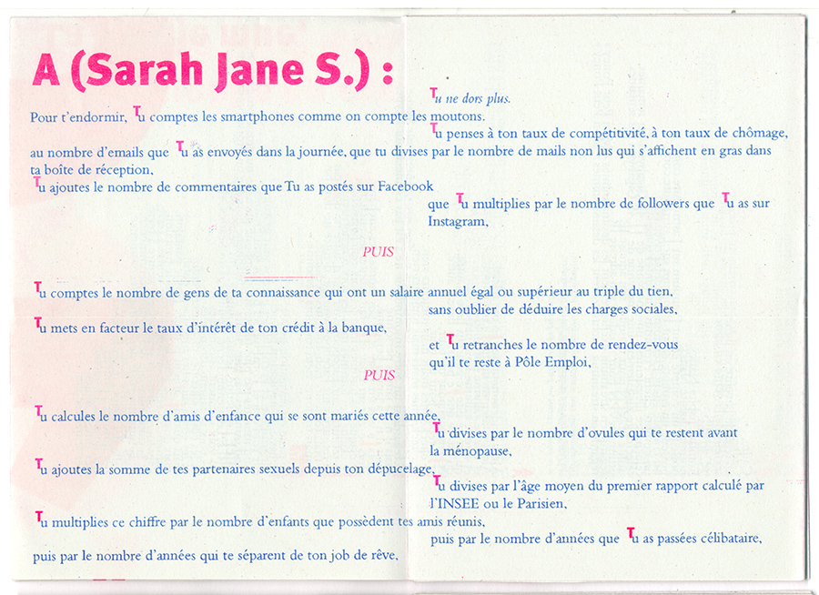
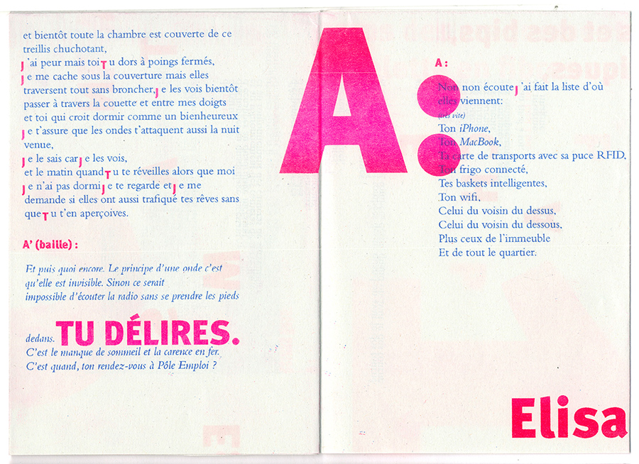
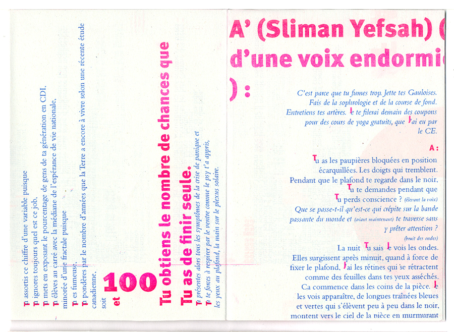
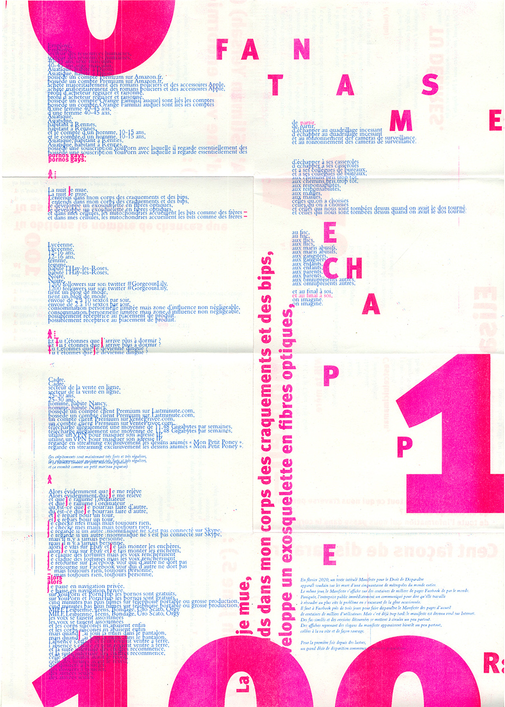
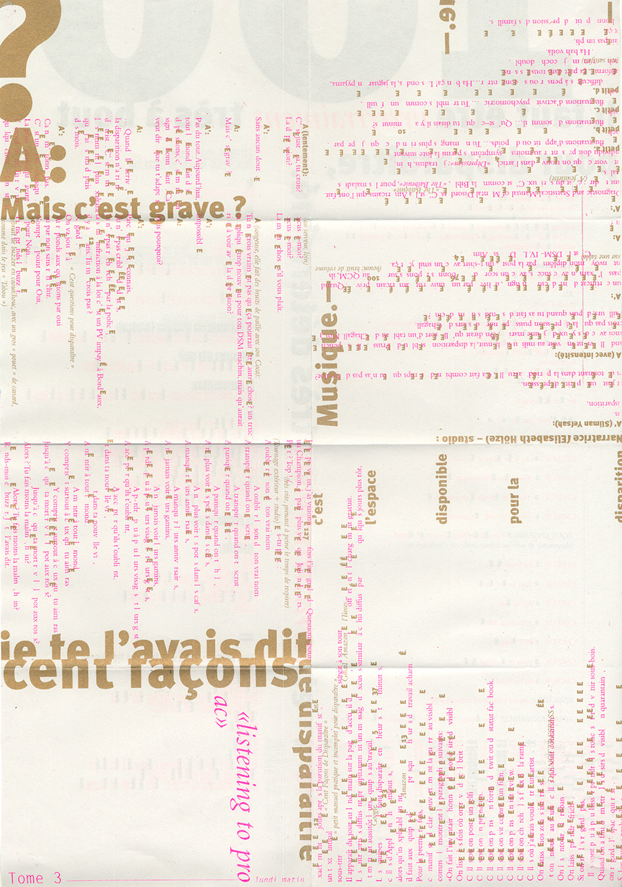
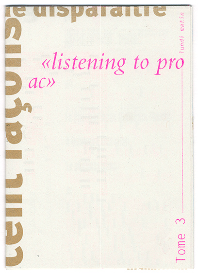
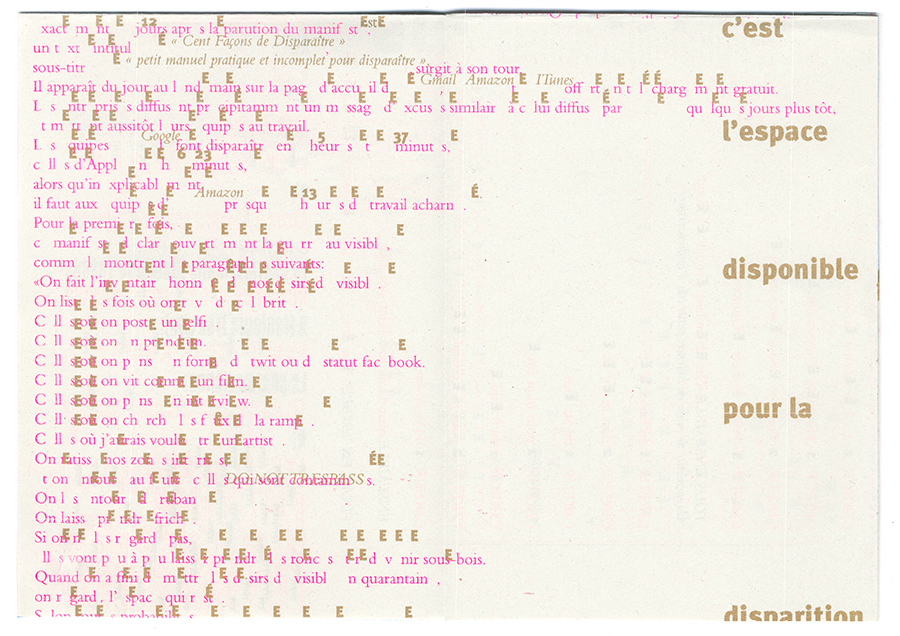
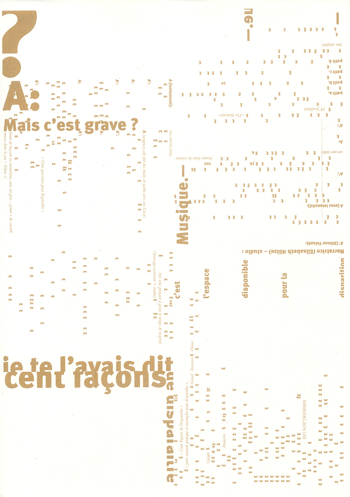